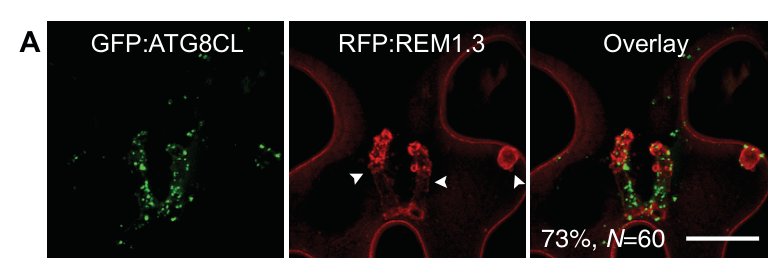

JOKA2 (M1BJF6), also called NBR1 homolog, is the potato (Solanum tuberosum) member of the plant NBR1/Joka2 family of selective-autophagy cargo receptors - the functional analogue of mammalian p62/SQSTM1 and NBR1. It has the canonical NBR1 modular architecture: an N-terminal PB1 oligomerization domain, a (degenerate) ZZ-type zinc finger, the NBR1/FW region, a C-terminal UBA ubiquitin-binding domain, and an ATG8-interacting motif (AIM/LIR; 817-WDPI-824). JOKA2 functions as an autophagy cargo adaptor that bridges cargo to the autophagosomal membrane by binding the ATG8-family protein ATG8CL through its AIM; binding is abolished by the W821A/I824A AIM mutation (Joka2-AIM) [PMID:26765567]. Through this ATG8CL-coupled selective-autophagy pathway it contributes to plant immunity: overexpression of wild-type Joka2 (but not Joka2-AIM) restricts lesions caused by the oomycete pathogen Phytophthora infestans, while silencing Joka2 increases susceptibility [PMID:26765567]. During infection, Joka2/ATG8CL-labelled defense-related autophagosomes are diverted to the perihaustorial/extrahaustorial membrane to restrict pathogen growth, and the P. infestans RXLR effector PexRD54 antagonises Joka2 by outcompeting it for ATG8CL binding [PMID:26765567, PMID:29932422]. JOKA2 localizes to cytoplasmic ATG8CL-positive autophagosomes and its cargo is ultimately delivered to the vacuole. Its core molecular function is as a selective-autophagy receptor/adaptor (ATG8-family-protein binding, ubiquitin binding via the UBA domain, autophagy cargo adaptor activity); it is NOT an enzyme or a transmembrane transporter. JOKA2 is a genuine autophagy gene, so its UniProt "Autophagy" keyword reflects real biology - in contrast to many SPKW "autophagy" over-annotations - though the most specific terms (macroautophagy / selective autophagy / autophagy cargo adaptor activity) are preferable to the broad parent terms produced by keyword mapping.
| GO Term | Evidence | Action | Reason |
|---|---|---|---|
|
GO:0006914
autophagy
|
IEA
GO_REF:0000043 |
MODIFY |
Summary: SPKW (GO_REF:0000043) annotation derived from the UniProt keyword "Autophagy"; snapshot-only, removed from the current GOA release. JOKA2 is a genuine NBR1/p62-family selective-autophagy cargo receptor, so the autophagy keyword is biologically CORRECT, but "autophagy" is the broad parent of the gene's actual macroautophagy/selective-autophagy role.
Reason: Unlike the human "autophagy" SPKW over-annotations on unrelated proteins, this is a legitimate autophagy gene: potato Joka2 is "a selective autophagy cargo receptor of Solanaceous plants that also binds ATG8 via an AIM", it physically associates with ATG8CL (lost in the Joka2-AIM mutant), and overexpression of Joka2 (but not Joka2-AIM) "also activates ATG8CL-mediated selective autophagy" [PMID:26765567]. The cited work explicitly states "Joka2/NBR1 mediated selective autophagy pathway contributes to defense against P. infestans" [PMID:29932422]. Removal therefore lost correct biology. However "autophagy" (GO:0006914) is over-broad; because Joka2 acts in autophagosome-mediated (macro)autophagy, the more specific child term "macroautophagy" (GO:0016236) is preferred, with the selective/cargo-receptor aspect captured by the NEW autophagy cargo adaptor activity MF (GO:0160247) below. MODIFY rather than ACCEPT or REMOVE.
Proposed replacements:
macroautophagy
Supporting Evidence:
PMID:26765567
Joka2 was reported as a selective autophagy cargo receptor of Solanaceous plants that also binds ATG8 via an AIM
PMID:26765567
This indicates that Joka2 also activates ATG8CL-mediated selective autophagy.
file:SOLTU/JOKA2/JOKA2-deep-research-falcon.md
JOKA2 is a **selective autophagy cargo receptor** that links cargo to ATG8-positive autophagosomes, with a prominent role in **antimicrobial selective autophagy** during oomycete infection.
|
|
GO:0015031
protein transport
|
IEA
GO_REF:0000043 |
MARK AS OVER ANNOTATED |
Summary: SPKW (GO_REF:0000043) annotation derived from the UniProt keywords "Protein transport" / "Transport"; snapshot-only, removed from the current GOA release. The keyword reflects the cargo-receptor / autophagosome-delivery role of JOKA2 but maps to a generic vesicular protein-transport process that does not capture the autophagy-specific function.
Reason: GOA's removal of this annotation was JUSTIFIED. JOKA2 does deliver cargo (and itself) into ATG8-coated autophagosomes that are then carried to the vacuole - "selective-autophagy employs specialized autophagy cargo receptors that bind ATG8 on autophagosome membranes, and recruit specific cargoes to autophagosomes" [PMID:29932422] - so in a loose sense it participates in protein relocation. However, "protein transport" (GO:0015031) is a broad term most strongly associated with secretory/endomembrane and transmembrane protein trafficking; for an autophagy cargo receptor it is uninformative and potentially misleading, implying a generic transport role the protein does not have. The genuine activity is better captured by the autophagy-specific terms: the molecular function "autophagy cargo adaptor activity" (GO:0160247) and the process "macroautophagy" (GO:0016236), both added/proposed in this review. The keyword-derived parent therefore adds nothing once the specific autophagy annotations are present, and its removal is appropriate.
Supporting Evidence:
PMID:29932422
selective-autophagy employs specialized autophagy cargo receptors that bind ATG8 on autophagosome membranes, and recruit specific cargoes to autophagosomes
file:SOLTU/JOKA2/JOKA2-deep-research-falcon.md
JOKA2 is a **selective autophagy cargo receptor** that links cargo to ATG8-positive autophagosomes, with a prominent role in **antimicrobial selective autophagy** during oomycete infection.
|
|
GO:0031410
cytoplasmic vesicle
|
IEA
GO_REF:0000043 |
MODIFY |
Summary: SPKW (GO_REF:0000043) annotation derived from the UniProt keyword "Cytoplasmic vesicle"; snapshot-only, removed from the current GOA release. JOKA2 associates with cytoplasmic autophagosomes, so the essence is correct, but "cytoplasmic vesicle" is the broad parent of the specific compartment, the autophagosome.
Reason: The annotation is not wrong - JOKA2 localizes to cytoplasmic autophagosomes (a type of cytoplasmic vesicle): "JOKA2 localizes to cytoplasmic puncta consistent with autophagosomes and associates with **ATG8CL**-labeled structures in vivo", and the protein co-localizes with GFP:ATG8CL-labelled autophagosomes [PMID:26765567]. The UniProt subcellular-location annotation lists "Cytoplasmic vesicle, autophagosome", and the cell-biology data place Joka2 specifically on ATG8CL-positive autophagosomes. The broad keyword-derived parent "cytoplasmic vesicle" (GO:0031410) should therefore be replaced by the specific, directly supported child term "autophagosome" (GO:0005776), which is independently annotated in current GOA from the Swiss-Prot subcellular-location vocabulary. MODIFY (generalize -> specialize) rather than MARK_AS_OVER_ANNOTATED.
Proposed replacements:
autophagosome
Supporting Evidence:
file:SOLTU/JOKA2/JOKA2-deep-research-falcon.md
JOKA2 localizes to cytoplasmic puncta consistent with autophagosomes and associates with **ATG8CL**-labeled structures in vivo
PMID:26765567
Joka2:RFP colocalizes with GFP:ATG8CL-labelled autophagosomes
|
|
GO:0005773
vacuole
|
IEA
GO_REF:0000044 |
ACCEPT |
Summary: IEA annotation from the UniProtKB/Swiss-Prot subcellular-location vocabulary mapping (SL-0272 Vacuole). Duplicates the EXP vacuole annotation below; the autophagy pathway delivers Joka2-associated cargo to the vacuole.
Reason: Consistent with the experimentally supported vacuole annotation (EXP, PMID:29932422) and with autophagy biology: autophagosomes "are then carried to the vacuole for recycling" [PMID:29932422]. The vacuole is the terminal degradative compartment for the selective autophagy pathway in which JOKA2 acts. The IEA duplicate of the EXP annotation is acceptable.
Supporting Evidence:
PMID:29932422
autophagosomes, which are then carried to the vacuole for recycling
|
|
GO:0005776
autophagosome
|
IEA
GO_REF:0000044 |
ACCEPT |
Summary: IEA annotation from the UniProtKB/Swiss-Prot subcellular-location vocabulary mapping (SL-0023 Autophagosome). This is the core, directly supported localization of JOKA2.
Reason: Strongly supported by direct cell-biology evidence. JOKA2 localizes to cytoplasmic ATG8CL-positive autophagosomes: "Joka2:RFP colocalizes with GFP:ATG8CL-labelled autophagosomes" [PMID:26765567], and "JOKA2 localizes to cytoplasmic puncta consistent with autophagosomes and associates with ATG8CL-labeled structures in vivo". The autophagosome is the precise compartment where the cargo receptor docks onto ATG8 via its AIM; this annotation is also the proposed replacement for the broad retired "cytoplasmic vesicle" SPKW term.
Supporting Evidence:
PMID:26765567
Joka2:RFP colocalizes with GFP:ATG8CL-labelled autophagosomes
file:SOLTU/JOKA2/JOKA2-deep-research-falcon.md
JOKA2 localizes to cytoplasmic puncta consistent with autophagosomes and associates with **ATG8CL**-labeled structures in vivo
|
|
GO:0008270
zinc ion binding
|
IEA
GO_REF:0000002 |
KEEP AS NON CORE |
Summary: IEA annotation from InterPro (IPR000433, ZZ-type zinc finger). JOKA2 carries a ZZ-type zinc finger (residues 442-492, with predicted Zn-coordinating residues C447/C450/C471/C474), but the domain is annotated as degenerate.
Reason: The ZZ-type zinc finger is a genuine structural feature inferred by InterPro and present in the UniProt feature table (ZN_FING 442-492, "ZZ-type; degenerate"; BINDING residues for Zn(2+)), so zinc binding is plausible. In NBR1-family receptors the ZZ domain participates in cargo recognition rather than catalysis. However, the domain is explicitly degenerate in JOKA2, there is no gene-specific experimental evidence for metal binding, and zinc binding is a structural/auxiliary property rather than the protein's core selective-autophagy-receptor function. Retain as a correct but non-core molecular feature.
Supporting Evidence:
file:SOLTU/JOKA2/JOKA2-deep-research-falcon.md
**ZZ** zinc finger and **FW/NBR1** region (cargo-recognition functions)
|
|
GO:0005773
vacuole
|
EXP
PMID:29932422 Host autophagy machinery is diverted to the pathogen interfa... |
ACCEPT |
Summary: Experimental (EXP) vacuole localization from the 2018 study. The vacuole is the terminal compartment of the JOKA2/ATG8CL selective-autophagy pathway.
Reason: Supported by the UniProt SUBCELLULAR LOCATION annotation ("Vacuole {ECO:0000269|PubMed:29932422}") and consistent with autophagy biology, in which autophagosomes carrying cargo receptors are delivered to the vacuole: "autophagosomes, which are then carried to the vacuole for recycling" [PMID:29932422]. Accept as a core localization for the pathway endpoint.
Supporting Evidence:
PMID:29932422
autophagosomes, which are then carried to the vacuole for recycling
|
|
GO:0005515
protein binding
|
IPI
PMID:26765567 An effector of the Irish potato famine pathogen antagonizes ... |
MODIFY |
Summary: IPI annotation (with UniProtKB:M1C146, ATG8CL) for the physical Joka2-ATG8CL interaction. "Protein binding" is uninformative; the interaction is the defining ATG8-family-protein / autophagy-cargo-adaptor activity of the receptor.
Reason: The interaction partner M1C146 is potato ATG8CL, and the binding occurs through the JOKA2 AIM motif: "potato Joka2, but not the AIM mutant, Joka2AIM, associated with ATG8CL", and "Mutation of the predicted AIM in Joka2 (819-WDPI-822) to ADPA resulted in loss of ATG8CL binding" [PMID:26765567]. Per curation guidelines the vague "protein binding" (GO:0005515) should be replaced by an informative molecular function. The most accurate term is "autophagy cargo adaptor activity" (GO:0160247) - the binding activity that brings cargo to the phagophore via ATG8 - capturing both the ATG8-family-protein binding and the receptor/adaptor role. This is also added as a NEW annotation below; MODIFY here to retain the IPI evidence with M1C146.
Proposed replacements:
autophagy cargo adaptor activity
Supporting Evidence:
PMID:26765567
potato Joka2, but not the AIM mutant, Joka2AIM, associated with ATG8CL
PMID:26765567
Mutation of the predicted AIM in Joka2 (819-WDPI-822) to ADPA resulted in loss of ATG8CL binding
|
|
GO:0050832
defense response to fungus
|
IDA
PMID:29932422 Host autophagy machinery is diverted to the pathogen interfa... |
MODIFY |
Summary: IDA annotation for JOKA2's role in defense against the late blight pathogen. The biological conclusion (positive role in pathogen defense) is well supported, but the pathogen is Phytophthora infestans, an OOMYCETE, not a fungus, so the term is taxonomically incorrect.
Reason: The defense role is strongly supported: "Overexpression of Joka2, but not Joka2AIM, significantly restricted the size of the disease lesions caused by P. infestans" and "virus-induced gene silencing of Joka2 resulted in increased disease lesions", leading the authors to conclude "Joka2-mediated selective autophagy contributes to defense against this pathogen" [PMID:26765567]; the 2018 study reiterates that "Joka2/NBR1 mediated selective autophagy pathway contributes to defense against P. infestans" [PMID:29932422]. However, Phytophthora infestans is an oomycete (Stramenopiles), not a true fungus, so "defense response to fungus" (GO:0050832) is the wrong taxonomic branch. It should be MODIFIED to "defense response to oomycetes" (GO:0002229), the accurate term, retaining the IDA evidence.
Proposed replacements:
defense response to oomycetes
Supporting Evidence:
PMID:26765567
Overexpression of Joka2, but not Joka2AIM, significantly restricted the size of the disease lesions caused by P. infestans
PMID:29932422
we recently showed that Joka2/NBR1 mediated selective autophagy pathway contributes to defense against P. infestans
|
|
GO:0160247
autophagy cargo adaptor activity
|
IPI
PMID:26765567 An effector of the Irish potato famine pathogen antagonizes ... |
NEW |
Summary: JOKA2 is a selective-autophagy cargo receptor that bridges cargo to the autophagosomal membrane by binding the ATG8-family protein ATG8CL through its AIM motif. This precise molecular function is not represented in current GOA (only the vague "protein binding").
Reason: The current/seeded MF annotation is only the uninformative "protein binding" (GO:0005515). The defining activity of JOKA2 is autophagy cargo adaptor activity (GO:0160247) - "the binding activity of a molecule that brings together a cargo, targeted for degradation via autophagy, to a phagophore". JOKA2 "binds ATG8 via an AIM" and is "a selective autophagy cargo receptor of Solanaceous plants" [PMID:26765567]; the AIM-dependent ATG8CL interaction (lost in Joka2-AIM) is required for its function as a host autophagy cargo receptor (UniProt DOMAIN). IPI is justified by the in planta co-immunoprecipitation of Joka2 with ATG8CL (UniProtKB:M1C146) and the AIM-mutant loss of binding.
Supporting Evidence:
PMID:26765567
Joka2 was reported as a selective autophagy cargo receptor of Solanaceous plants that also binds ATG8 via an AIM
PMID:26765567
potato Joka2, but not the AIM mutant, Joka2AIM, associated with ATG8CL
file:SOLTU/JOKA2/JOKA2-deep-research-falcon.md
Joka2 binds **ATG8CL** through an **AIM**, and this binding is required for functional immune output
|
|
GO:0043130
ubiquitin binding
|
ISS
GO_REF:0000043 |
NEW |
Summary: JOKA2 has a C-terminal UBA domain (residues 811-860) characteristic of NBR1/p62-family receptors, which bind ubiquitin to recognize ubiquitinated cargo. Inferred from sequence/ domain similarity; not yet directly demonstrated for the potato protein.
Reason: NBR1/p62-family selective-autophagy receptors couple ubiquitinated cargo to ATG8 via a C-terminal UBA ubiquitin-binding domain. JOKA2 has this UBA domain (UniProt DOMAIN 811-860; Pfam PF24932 UBA_NBR1_C, PROSITE UBA), and the deep-research synthesis notes that "the receptor's UBA domains strongly imply ubiquitin-binding capability, consistent with plant NBR1 family behavior". Ubiquitin binding (GO:0043130) is therefore a strongly supported family-level molecular function. Marked ISS because, although the domain is present, direct ubiquitin-binding has not been shown for potato JOKA2 specifically (it is established for the Arabidopsis/general plant NBR1 family). Provided as a NEW, conservative MF.
Supporting Evidence:
file:SOLTU/JOKA2/JOKA2-deep-research-falcon.md
the receptor’s **UBA domains** strongly imply ubiquitin-binding capability, consistent with plant NBR1 family behavior
file:SOLTU/JOKA2/JOKA2-deep-research-falcon.md
**UBA** domain(s) (ubiquitin binding)
|
Q: Does potato JOKA2 mediate aggrephagy (GO:0035973, selective autophagy of protein aggregates) via PB1-driven oligomerization and cargo condensation, as inferred from the plant NBR1/Joka2 family? (Both ubiquitin binding, GO:0043130, and macroautophagy/cargo-adaptor activity are already captured above; aggrephagy is the family-level process still untested in potato.)
Suggested experts: Yan Zhang
Q: What are the endogenous defense-related cargoes that potato JOKA2 delivers to autophagosomes during P. infestans infection, and are they ubiquitinated?
Suggested experts: Tolga O. Bozkurt
Q: Does potato JOKA2 recognize non-ubiquitinated cargo via its ZZ+FW region and undergo liquid-liquid phase separation, as recently shown for Arabidopsis NBR1?
Suggested experts: Yasin F. Dagdas
Q: Is JOKA2's UBA domain functional for ubiquitin binding in potato, and how does ubiquitin-dependent versus ATG8-dependent recruitment partition its activity?
Suggested experts: Sophien Kamoun
Experiment: Identify endogenous JOKA2 cargo by affinity-purification mass spectrometry of Joka2 versus Joka2-AIM during P. infestans infection, and test ubiquitination of candidate cargoes.
Hypothesis: JOKA2 selectively captures ubiquitinated defense-related or pathogen-derived proteins for autophagic delivery to the vacuole.
Type: affinity-purification proteomics
Experiment: Test recombinant JOKA2 UBA domain for binding to mono- and poly-ubiquitin chains in vitro (ITC/pulldown), and assess cargo recruitment in planta with a UBA-domain mutant.
Hypothesis: The JOKA2 UBA domain binds ubiquitin and is required for recognition of ubiquitinated cargo, as in other NBR1/p62-family receptors.
Type: in vitro ubiquitin-binding and structure-function assay
Experiment: Quantify P. infestans colonization and autophagic flux in joka2 loss-of-function potato lines complemented with wild-type, AIM-mutant, UBA-mutant or PB1-mutant JOKA2.
Hypothesis: ATG8 binding (AIM), ubiquitin binding (UBA) and oligomerization (PB1) each contribute to JOKA2-mediated selective autophagy and immunity against the oomycete.
Type: genetic complementation and disease-resistance assay
The research report should be a detailed narrative explaining the function, biological processes, and localization of the gene product. Citations should be given for all claims.
You should prioritize authoritative reviews and primary scientific literature when conducting research. You can supplement
this with annotations you find in gene/protein databases, but these can be outdated or inaccurate.
We are specifically interested in the primary function of the gene - for enzymes, what reaction is catalyzed, and what is the substrate specificity? For transporters, what is the substrate? For structural proteins or adapters, what is the broader structural role? For signaling molecules, what is the role in the pathway.
We are interested in where in or outside the cell the gene product carries out its function.
We are also interested in the signaling or biochemical pathways in which the gene functions. We are less interested in broad pleiotropic effects, except where these elucidate the precise role.
Include evidence where possible. We are interested in both experimental evidence as well as inference from structure, evolution, or bioinformatic analysis. Precise studies should be prioritized over high-throughput, where available.
The research target here is JOKA2 from Solanum tuberosum (potato), UniProt M1BJF6, annotated as “Protein JOKA2 / Protein NBR1 homolog,” with PB1-like, NBR1/FW, and UBA domain architecture plus an Ig-like fold. The primary literature on the potato late blight pathosystem explicitly studies Joka2/NBR1 as a host selective autophagy cargo receptor that binds ATG8CL through an ATG8-interacting motif (AIM/LIR) and contributes to defense against Phytophthora infestans (Dagdas et al., 2016; Dagdas et al., 2018). These molecular and domain features align with the UniProt domain annotations given for M1BJF6 (PB1-like; NBR1/FW; UBA). (dagdas2016aneffectorof pages 5-7, dagdas2018hostautophagymachinery pages 2-4)
Macroautophagy (autophagy) is a conserved eukaryotic pathway in which cytoplasmic material is engulfed into double-membrane autophagosomes and delivered to the vacuole/lysosome for degradation. Selective autophagy is the targeted version of this process, in which receptors/adaptors provide specificity by binding both cargo and ATG8/LC3-family proteins on nascent autophagosomal membranes. (leong2022selectiveautophagyadding pages 8-9, zhang2020broadandcomplex pages 3-5)
Plant selective autophagy receptors commonly bind ATG8 via AIM/LIR motifs, short linear sequences that dock into ATG8. Because AIM-like patterns occur frequently by chance, contemporary work emphasizes validating functional AIMs with structural or interaction assays; recent methods use AlphaFold2-multimer to improve AIM discovery in plant proteins and pathogen effectors that target ATG8. (dagdas2016aneffectorof pages 5-7)
NBR1 in plants is a functional analog of mammalian p62/SQSTM1 and NBR1 and is considered a major receptor for aggrephagy (selective removal of protein aggregates) and immunity-related selective autophagy. Plant NBR1-family proteins typically have:
- PB1 domain (oligomerization/polymerization)
- ZZ zinc finger and FW/NBR1 region (cargo-recognition functions)
- UBA domain(s) (ubiquitin binding)
- AIM/LIR motif (ATG8 binding)
This modular design is consistent with JOKA2’s experimentally examined domain architecture in the Solanaceae late blight system. (dagdas2018hostautophagymachinery pages 2-4, zhang2020broadandcomplex pages 3-5)
In the P. infestans infection context, Joka2 is shown as a modular receptor with the architecture PB1 – ZZ – NBR1/FW – UBA – AIM – UBA, matching canonical plant NBR1 receptors and supporting the UniProt-provided domain set. The perihaustorial recruitment experiments further show that domains beyond AIM are required for focal recruitment (see below). (dagdas2018hostautophagymachinery pages 2-4, dagdas2018hostautophagymachinery media f53fff51)
Primary function: JOKA2 is a selective autophagy cargo receptor that links cargo to ATG8-positive autophagosomes, with a prominent role in antimicrobial selective autophagy during oomycete infection.
Mechanistically:
- Joka2 binds ATG8CL through an AIM, and this binding is required for functional immune output (Joka2^AIM mutants lose key activities). (dagdas2016aneffectorof pages 3-5, dagdas2016aneffectorof pages 5-7)
- Joka2 activity is associated with ATG8CL-marked autophagosome dynamics, consistent with receptor-mediated recruitment to autophagosomes. (dagdas2018hostautophagymachinery pages 1-2, dagdas2016aneffectorof pages 5-7)
Direct cargo substrates of potato JOKA2 were not specified in the accessible excerpts, but the receptor’s UBA domains strongly imply ubiquitin-binding capability, consistent with plant NBR1 family behavior. (dagdas2018hostautophagymachinery pages 2-4, zhang2020broadandcomplex pages 3-5)
A major 2024 mechanistic advance (in Arabidopsis NBR1) is that plant NBR1 can also recognize non-ubiquitinated substrates using ZZ + FW domains and can do so without UBA involvement for certain cargos, while still being routed to autophagosomes via ATG8 binding. This provides a plausible, domain-grounded inference that potato JOKA2 may similarly have both ubiquitin-dependent and ubiquitin-independent cargo recognition modes (although this is not yet directly shown for potato JOKA2 in the retrieved evidence). (yan2024dualrolesof pages 1-2, yan2024dualrolesof pages 6-8)
Plant NBR1/Joka2 receptors can oligomerize via PB1 and contribute to receptor/cargo condensation, a key conceptual link to aggrephagy and potentially to focal recruitment during infection. In the Solanaceae late blight system, the requirement for N-terminal domains (PB1/ZZ) to recruit Joka2 to perihaustorial structures supports the view that oligomerization and/or partner interactions are essential to receptor function at pathogen interfaces. (dagdas2018hostautophagymachinery pages 2-4, leong2022selectiveautophagyadding pages 8-8)
JOKA2 localizes to cytoplasmic puncta consistent with autophagosomes and associates with ATG8CL-labeled structures in vivo. (dagdas2018hostautophagymachinery pages 4-6, dagdas2018hostautophagymachinery media f53fff51)
A defining feature of JOKA2/NBR1 in the Phytophthora–Solanaceae interaction is polarized recruitment of autophagosomes to the pathogen interface:
- Full-length Joka2:BFP labels perihaustorial puncta/EHM-associated compartments at high frequency (92%, N=50 in one quantification; and Joka2-labeled perihaustorial autophagosomes scored at 100%, N=140). (dagdas2018hostautophagymachinery pages 2-4, dagdas2018hostautophagymachinery pages 4-6)
- Imaging shows Joka2-positive autophagosomes at the EHM in infected cells (visual evidence). (dagdas2018hostautophagymachinery media 0199f3b8)
This supports the functional annotation that potato JOKA2 acts at pathogen-contact sites (haustoria/EHM) by participating in “focal” selective autophagy compartments.
The perihaustorial recruitment phenotype is multi-domain:
- AIM mutation reduces Joka2 association with ATG8CL puncta: Joka2^AIM rarely coincides with ATG8CL puncta (19%, N=37), and perihaustorial puncta frequency decreases (74%, N=42). (dagdas2018hostautophagymachinery pages 4-6, dagdas2018hostautophagymachinery pages 2-4)
- A truncation lacking PB1/ZZ but retaining ubiquitin-binding and ATG8-interacting modules (Joka2Δ1–487) fails to accumulate at haustoria (1%, N=72, also reported as ~1.3% of haustoria). This demonstrates that ATG8/UBA functionality alone is insufficient and that PB1/ZZ-mediated oligomerization/associations are critical. (dagdas2018hostautophagymachinery pages 2-4, dagdas2018hostautophagymachinery pages 6-7)
In the potato late blight context, Joka2 shows preferential functional coupling to the potato ATG8CL autophagy branch (versus ATG8IL) and contributes to restricting pathogen colonization. (dagdas2016aneffectorof pages 5-7, dagdas2018hostautophagymachinery pages 1-2)
A key mechanistic discovery is that P. infestans deploys the RXLR effector PexRD54 to bind ATG8CL via its own AIM and outcompete Joka2, depleting it from ATG8CL complexes/autophagosomes. This antagonizes Joka2’s positive role in defense and reprograms autophagosome formation in a pathogen-favoring manner. (dagdas2016aneffectorof pages 1-2, dagdas2016aneffectorof pages 5-7)
A 2024 expert review on perihaustorial effectors highlights NBR1/Joka2 recruitment to EHM-associated autophagosomes as a focal defense feature and emphasizes the PexRD54 strategy of preventing Joka2-mediated delivery of putative antimicrobial cargoes to the interface. (king2024bordercontrolmanipulation pages 3-4)
The 2024 Autophagy study in Arabidopsis provides a major conceptual update: plant NBR1 (in a lineage lacking SQSTM1/p62) can combine both receptor functions and liquid–liquid phase separation (LLPS) behavior. It reports that NBR1 forms droplets/condensates prior to autophagosome formation and that ZZ+FW domains can enable recognition of non-ubiquitinated substrates; receptor variants show measurable condensate dynamics (fusion events observed over ~232.20 s; FRAP recovery examined over 600 s, n=4). These findings strengthen the functional inference that potato JOKA2 may participate in condensate-like assembly as part of its receptor mechanism, consistent with the PB1/ZZ dependence seen in the Solanaceae infection system. (yan2024dualrolesof pages 6-8, yan2024dualrolesof pages 8-9)
The 2024 MPMI review frames selective autophagy (including NBR1/Joka2–ATG8CL axis) as a recurring target of perihaustorial oomycete effectors and places Joka2-mediated focal autophagy at the EHM among key interface processes. (king2024bordercontrolmanipulation pages 3-4)
A 2023 PLOS Biology paper demonstrates AlphaFold2-multimer guided prediction of functional ATG8-binding motifs in plant proteins and notes the broader utility for discovering receptor–ATG8 interactions, which is directly relevant for mapping JOKA2 interactors and confidently identifying AIMs beyond simple consensus searching. (dagdas2016aneffectorof pages 5-7)
A 2024 multi-author review (Autophagy Reports) argues autophagy is a practical target for resilient crops and summarizes successful transgenic strategies in crops (e.g., ATG gene overexpression improving abiotic stress tolerance). It specifically highlights that manipulating selective autophagy receptor NBR1 is promising, noting NBR1 overexpression in Populus improved salt tolerance and that NBR1 participates in stress tolerance and quality control of damaged cellular components. This provides a translational rationale for considering JOKA2/NBR1-class receptors as engineering targets in Solanaceae crops (e.g., potato) to modulate stress and immunity traits. (petersen2024autophagyinplants pages 23-26)
Within the late blight pathosystem, the best-defined actionable axis is protecting or enhancing JOKA2-mediated selective autophagy while reducing susceptibility to PexRD54-mediated competition at ATG8CL (e.g., modifying interaction surfaces or pathway components to reduce effector hijacking). Reviews of RxLR effector biology suggest that altering host targets to prevent effector interaction is a plausible disease-resistance strategy, conceptually consistent with the PexRD54–ATG8CL–Joka2 mechanism (though implementing this for potato requires targeted validation). (king2024bordercontrolmanipulation pages 3-4)
Quantitative localization and domain-dependence (Solanaceae–P. infestans interface):
- Full-length Joka2 perihaustorial localization: 92% (N=50); Joka2-labelled perihaustorial autophagosomes: 100% (N=140). (dagdas2018hostautophagymachinery pages 2-4, dagdas2018hostautophagymachinery pages 4-6)
- AIM mutant shows poor coincidence with ATG8CL puncta: 19% (N=37); perihaustorial puncta reduced to 74% (N=42). (dagdas2018hostautophagymachinery pages 4-6, dagdas2018hostautophagymachinery pages 2-4)
- Joka2Δ1–487 (lacking PB1/ZZ) fails to accumulate perihaustorially: 1% (N=72) (~1.3% of haustoria). (dagdas2018hostautophagymachinery pages 2-4, dagdas2018hostautophagymachinery pages 6-7)
Quantitative condensate/autophagy dynamics (Arabidopsis NBR1 mechanistic update):
- Condensate fusion events observed within ~232.20 s; FRAP recovery monitored up to 600 s (n=4); heat-stress survival comparisons significant with p < 0.001* and each genotype tested in >10 independent trials**. (yan2024dualrolesof pages 6-8, yan2024dualrolesof pages 8-9)
| Claim/Function | Evidence type (genetic/biochemical/cell biology/review) | Key experimental readout or statistic (include provided percentages N=... and key motif names) | System/organism | Key citation (author/year/journal + URL) | Notes for functional annotation |
|---|---|---|---|---|---|
| JOKA2 is the Solanaceae/potato homolog of plant NBR1 and functions as a selective autophagy cargo receptor | Biochemical, review | Potato Joka2 co-immunoprecipitates with ATG8CL; interaction requires an ATG8-interacting motif (AIM), because Joka2^AIM fails to bind; literature describes Joka2/NBR1 as a ubiquitin- and ATG8-binding selective autophagy receptor (dagdas2016aneffectorof pages 3-5, leong2022selectiveautophagyadding pages 9-10, zhang2020broadandcomplex pages 3-5) | Solanum tuberosum-derived Joka2 studied in planta; broader Solanaceae/plant context | Dagdas et al. 2016, eLife — https://doi.org/10.7554/eLife.10856; Leong et al. 2022, Essays Biochem. — https://doi.org/10.1042/EBC20210063 | Supports annotation as a selective autophagy receptor/adaptor, not an enzyme or transporter; core biochemical role is bridging cargo to ATG8-positive autophagosomes |
| JOKA2 positively contributes to defense against Phytophthora infestans | Genetic, infection phenotyping | Overexpression of Joka2, but not Joka2^AIM, reduces late blight lesion size; silencing Joka2 increases lesion size, indicating a positive defense role dependent on AIM-mediated autophagy coupling (dagdas2016aneffectorof pages 5-7) | Nicotiana benthamiana infection assays with P. infestans using potato/Solanaceae Joka2 constructs | Dagdas et al. 2016, eLife — https://doi.org/10.7554/eLife.10856 | Primary biological process: antimicrobial selective autophagy / plant immunity |
| JOKA2 preferentially functions with the potato ATG8CL autophagy branch | Biochemical, cell biology | Joka2 shows preferential association with ATG8CL rather than ATG8IL; overexpression increases GFP:ATG8CL-labeled autophagosomes and ATG8CL protein accumulation; AIM is required for productive interaction (dagdas2016aneffectorof pages 3-5, dagdas2016aneffectorof pages 5-7, dagdas2018hostautophagymachinery pages 1-2) | Potato/Solanaceae autophagy machinery in transient expression systems | Dagdas et al. 2016, eLife — https://doi.org/10.7554/eLife.10856 | Suggests cargo routing through a specialized ATG8CL-associated selective autophagy pathway |
| JOKA2-labeled autophagosomes are redirected to the pathogen interface (haustorial region/EHM) during infection | Cell biology | Full-length Joka2:BFP localizes to perihaustorial puncta/EHM in 92% (N=50) of observations; Joka2:BFP-labeled perihaustorial autophagosomes reported in 100% (N=140) of scored haustoria; Joka2 and ATG8CL associate with the extrahaustorial membrane marker REM1.3 (dagdas2018hostautophagymachinery pages 2-4, dagdas2018hostautophagymachinery pages 4-6, dagdas2018hostautophagymachinery media f53fff51) | N. benthamiana cells infected by P. infestans; potato/Solanaceae Joka2 | Dagdas et al. 2018, eLife — https://doi.org/10.7554/eLife.37476 | Subcellular localization for annotation: cytoplasmic puncta/autophagosomes, especially perihaustorial autophagosomes at the extrahaustorial membrane during oomycete infection |
| ATG8 binding contributes to perihaustorial recruitment, but is not sufficient by itself | Cell biology, mutational analysis | Joka2^AIM still forms perihaustorial puncta at reduced frequency 74% (N=42), but coincidence with ATG8CL puncta is rare 19% (N=37); thus AIM-dependent ATG8 binding is important, yet additional determinants are needed (dagdas2018hostautophagymachinery pages 4-6, dagdas2018hostautophagymachinery pages 2-4) | P. infestans haustoriated cells expressing Joka2 variants | Dagdas et al. 2018, eLife — https://doi.org/10.7554/eLife.37476 | Functional motif annotation: contains a critical AIM/LIR-like motif for ATG8 engagement, but full focal recruitment requires multi-domain architecture |
| PB1/ZZ-mediated oligomerization or partner interactions are critical for focal recruitment | Cell biology, domain truncation | Joka2Δ1-487, lacking PB1/ZZ but retaining ubiquitin-binding and ATG8-interacting motifs, fails to accumulate perihaustorially: 1% (N=72) or 1.3% of haustoria; authors conclude PB1/ZZ-mediated oligomerization/association is critical (dagdas2018hostautophagymachinery pages 2-4, dagdas2018hostautophagymachinery pages 6-7) | N. benthamiana–P. infestans pathosystem | Dagdas et al. 2018, eLife — https://doi.org/10.7554/eLife.37476 | Domain-based annotation: PB1 domain likely mediates self-assembly/oligomerization; ZZ region contributes to recruitment and/or partner binding |
| Domain architecture matches UniProt M1BJF6 and canonical plant NBR1/JOKA2 receptors | Domain analysis, review, figure-based evidence | Figure schematic lists PB1 – ZZ – NBR1/FW – UBA – AIM – UBA; reviews describe plant NBR1 proteins as PB1/ZZ/FW(NBR1)/AIM/UBA receptors, with ubiquitin binding mainly via C-terminal UBA and ATG8 binding via AIM/LIR (dagdas2018hostautophagymachinery pages 2-4, zhang2020broadandcomplex pages 3-5, dagdas2018hostautophagymachinery media f53fff51) | Plant NBR1 family; Joka2-specific domain map from Solanaceae study | Dagdas et al. 2018, eLife — https://doi.org/10.7554/eLife.37476; Zhang & Chen 2020, Cells — https://doi.org/10.3390/cells9122562 | Strongly supports mapping to UniProt M1BJF6 domains: PB1-like, Nbr1_FW, UBA; molecular function is scaffold/receptor for selective autophagy |
| JOKA2 likely binds ubiquitinated cargo but can also participate in aggregate/condensate-like assemblies | Review, comparative mechanism | Reviews assign UBA-dependent ubiquitin binding and PB1-dependent oligomerization to plant NBR1/Joka2; Joka2 forms multimeric aggregates, and plant NBR1 can concentrate cargos in condensates/aggrephagy-like structures (leong2022selectiveautophagyadding pages 8-8, zhang2020broadandcomplex pages 3-5) | Plant NBR1/Joka2 family | Leong et al. 2022, Essays Biochem. — https://doi.org/10.1042/EBC20210063; Zhang & Chen 2020, Cells — https://doi.org/10.3390/cells9122562 | Functional inference for potato JOKA2: cargo receptor for ubiquitinated and possibly non-ubiquitinated aggregated substrates |
| Pathogen effector PexRD54 antagonizes JOKA2 by competing for ATG8CL | Biochemical, cell biology, pathogenesis | P. infestans RXLR effector PexRD54 carries its own AIM, binds ATG8CL, stimulates ATG8CL autophagosome formation, and competitively depletes Joka2 from ATG8CL complexes/autophagosomes in a dose-dependent manner (dagdas2016aneffectorof pages 3-5, dagdas2016aneffectorof pages 1-2, dagdas2018hostautophagymachinery pages 1-2, king2024bordercontrolmanipulation pages 3-4) | Potato late blight pathosystem / Solanaceae infection models | Dagdas et al. 2016, eLife — https://doi.org/10.7554/eLife.10856; King et al. 2024, MPMI — https://doi.org/10.1094/MPMI-09-23-0122-FI | Places JOKA2 in a defined pathway: host selective autophagy targeted by oomycete virulence effectors |
| Current 2024 understanding extends plant NBR1 biology to LLPS and non-ubiquitinated cargo recognition, informing JOKA2 functional inference | Recent primary research, review | Arabidopsis NBR1 uses ZZ + FW for non-ubiquitinated cargo recognition and undergoes LLPS before ATG8-mediated sequestration; PB1 is required for puncta, UBA contributes to puncta, and LIR mutant WDPI661-664AAAA blocks ATG8 recruitment (yan2024dualrolesof pages 1-2, yan2024dualrolesof pages 8-9, yan2024dualrolesof pages 6-8, yan2024dualrolesof pages 2-4) | Arabidopsis; inference to conserved plant NBR1/Joka2 receptors | Yan et al. 2024, Autophagy — https://doi.org/10.1080/15548627.2024.2391725 | Not potato-specific, but strengthens annotation that JOKA2 may combine cargo recognition + condensate formation + ATG8 delivery |
| Translational relevance: NBR1-mediated selective autophagy is an actionable crop-resilience pathway | Review, application-oriented synthesis | 2024 reviews highlight NBR1 overexpression improving salt tolerance in poplar, NBR1 importance in drought/salt responses, and the broader possibility of engineering ATG/receptor pathways for stress resilience and disease resistance (petersen2024autophagyinplants pages 23-26, petersen2024autophagyinplants pages 58-60) | Crop and model plant systems | Petersen et al. 2024, Autophagy Reports — https://doi.org/10.1080/27694127.2024.2395731 | For annotation context, JOKA2 belongs to a receptor class with agronomic relevance in immunity and abiotic stress adaptation |
| Expert consensus places JOKA2/NBR1 at the extrahaustorial membrane as a focal immune trafficking component | Review | 2024 expert review states NBR1/Joka2 is recruited to the EHM in ATG8CL-positive autophagosomes to restrict P. infestans growth, while PexRD54 prevents Joka2-mediated antimicrobial cargo delivery (king2024bordercontrolmanipulation pages 3-4) | Oomycete–plant interface review | King et al. 2024, MPMI — https://doi.org/10.1094/MPMI-09-23-0122-FI | Useful concise annotation statement: JOKA2 is a selective autophagy receptor operating at focal host–pathogen interfaces |
Table: This table summarizes the main experimental and review-based evidence supporting annotation of potato/Solanaceae JOKA2 as an NBR1-family selective autophagy receptor. It highlights domain architecture, localization, pathway role in late blight defense, and the strongest quantitative readouts available from the cited studies.
The retrieved excerpts provide strong mechanistic and localization evidence for JOKA2/NBR1 in Solanaceae immunity but do not include (in accessible text) explicit potato gene IDs, the UniProt accession M1BJF6 itself, or named endogenous potato cargo substrates of JOKA2. Lesion size changes are described qualitatively in the extracted text; exact numeric lesion areas and fold-changes would require direct access to the full figure/table readouts in the 2016 paper beyond the excerpted lines.
References
(dagdas2016aneffectorof pages 5-7): Yasin F Dagdas, Khaoula Belhaj, Abbas Maqbool, Angela Chaparro-Garcia, Pooja Pandey, Benjamin Petre, Nadra Tabassum, Neftaly Cruz-Mireles, Richard K Hughes, Jan Sklenar, Joe Win, Frank Menke, Kim Findlay, Mark J Banfield, Sophien Kamoun, and Tolga O Bozkurt. An effector of the irish potato famine pathogen antagonizes a host autophagy cargo receptor. eLife, Jan 2016. URL: https://doi.org/10.7554/elife.10856, doi:10.7554/elife.10856. This article has 255 citations and is from a domain leading peer-reviewed journal.
(dagdas2018hostautophagymachinery pages 2-4): Yasin F Dagdas, Pooja Pandey, Yasin Tumtas, Nattapong Sanguankiattichai, Khaoula Belhaj, Cian Duggan, Alexandre Y Leary, Maria E Segretin, Mauricio P Contreras, Zachary Savage, Virendrasinh S Khandare, Sophien Kamoun, and Tolga O Bozkurt. Host autophagy machinery is diverted to the pathogen interface to mediate focal defense responses against the irish potato famine pathogen. eLife, Jun 2018. URL: https://doi.org/10.7554/elife.37476, doi:10.7554/elife.37476. This article has 95 citations and is from a domain leading peer-reviewed journal.
(leong2022selectiveautophagyadding pages 8-9): Jia Xuan Leong, Gautier Langin, and Suayib Üstün. Selective autophagy: adding precision in plant immunity. Essays in Biochemistry, 66:189-206, Aug 2022. URL: https://doi.org/10.1042/ebc20210063, doi:10.1042/ebc20210063. This article has 31 citations and is from a peer-reviewed journal.
(zhang2020broadandcomplex pages 3-5): Yan Zhang and Zhixiang Chen. Broad and complex roles of nbr1-mediated selective autophagy in plant stress responses. Cells, 9:2562, Nov 2020. URL: https://doi.org/10.3390/cells9122562, doi:10.3390/cells9122562. This article has 50 citations.
(dagdas2018hostautophagymachinery media f53fff51): Yasin F Dagdas, Pooja Pandey, Yasin Tumtas, Nattapong Sanguankiattichai, Khaoula Belhaj, Cian Duggan, Alexandre Y Leary, Maria E Segretin, Mauricio P Contreras, Zachary Savage, Virendrasinh S Khandare, Sophien Kamoun, and Tolga O Bozkurt. Host autophagy machinery is diverted to the pathogen interface to mediate focal defense responses against the irish potato famine pathogen. eLife, Jun 2018. URL: https://doi.org/10.7554/elife.37476, doi:10.7554/elife.37476. This article has 95 citations and is from a domain leading peer-reviewed journal.
(dagdas2016aneffectorof pages 3-5): Yasin F Dagdas, Khaoula Belhaj, Abbas Maqbool, Angela Chaparro-Garcia, Pooja Pandey, Benjamin Petre, Nadra Tabassum, Neftaly Cruz-Mireles, Richard K Hughes, Jan Sklenar, Joe Win, Frank Menke, Kim Findlay, Mark J Banfield, Sophien Kamoun, and Tolga O Bozkurt. An effector of the irish potato famine pathogen antagonizes a host autophagy cargo receptor. eLife, Jan 2016. URL: https://doi.org/10.7554/elife.10856, doi:10.7554/elife.10856. This article has 255 citations and is from a domain leading peer-reviewed journal.
(dagdas2018hostautophagymachinery pages 1-2): Yasin F Dagdas, Pooja Pandey, Yasin Tumtas, Nattapong Sanguankiattichai, Khaoula Belhaj, Cian Duggan, Alexandre Y Leary, Maria E Segretin, Mauricio P Contreras, Zachary Savage, Virendrasinh S Khandare, Sophien Kamoun, and Tolga O Bozkurt. Host autophagy machinery is diverted to the pathogen interface to mediate focal defense responses against the irish potato famine pathogen. eLife, Jun 2018. URL: https://doi.org/10.7554/elife.37476, doi:10.7554/elife.37476. This article has 95 citations and is from a domain leading peer-reviewed journal.
(yan2024dualrolesof pages 1-2): He Yan, Ao Qi, Zhen Lu, Zhengtao You, Ziheng Wang, Haiying Tang, Xinghai Li, Qiao Xu, Xun Weng, Xiaojuan Du, Lifeng Zhao, and Hao Wang. Dual roles of atnbr1 in regulating selective autophagy via liquid-liquid phase separation and recognition of non-ubiquitinated substrates in arabidopsis. Autophagy, 20:2804-2815, Aug 2024. URL: https://doi.org/10.1080/15548627.2024.2391725, doi:10.1080/15548627.2024.2391725. This article has 16 citations and is from a domain leading peer-reviewed journal.
(yan2024dualrolesof pages 6-8): He Yan, Ao Qi, Zhen Lu, Zhengtao You, Ziheng Wang, Haiying Tang, Xinghai Li, Qiao Xu, Xun Weng, Xiaojuan Du, Lifeng Zhao, and Hao Wang. Dual roles of atnbr1 in regulating selective autophagy via liquid-liquid phase separation and recognition of non-ubiquitinated substrates in arabidopsis. Autophagy, 20:2804-2815, Aug 2024. URL: https://doi.org/10.1080/15548627.2024.2391725, doi:10.1080/15548627.2024.2391725. This article has 16 citations and is from a domain leading peer-reviewed journal.
(leong2022selectiveautophagyadding pages 8-8): Jia Xuan Leong, Gautier Langin, and Suayib Üstün. Selective autophagy: adding precision in plant immunity. Essays in Biochemistry, 66:189-206, Aug 2022. URL: https://doi.org/10.1042/ebc20210063, doi:10.1042/ebc20210063. This article has 31 citations and is from a peer-reviewed journal.
(dagdas2018hostautophagymachinery pages 4-6): Yasin F Dagdas, Pooja Pandey, Yasin Tumtas, Nattapong Sanguankiattichai, Khaoula Belhaj, Cian Duggan, Alexandre Y Leary, Maria E Segretin, Mauricio P Contreras, Zachary Savage, Virendrasinh S Khandare, Sophien Kamoun, and Tolga O Bozkurt. Host autophagy machinery is diverted to the pathogen interface to mediate focal defense responses against the irish potato famine pathogen. eLife, Jun 2018. URL: https://doi.org/10.7554/elife.37476, doi:10.7554/elife.37476. This article has 95 citations and is from a domain leading peer-reviewed journal.
(dagdas2018hostautophagymachinery media 0199f3b8): Yasin F Dagdas, Pooja Pandey, Yasin Tumtas, Nattapong Sanguankiattichai, Khaoula Belhaj, Cian Duggan, Alexandre Y Leary, Maria E Segretin, Mauricio P Contreras, Zachary Savage, Virendrasinh S Khandare, Sophien Kamoun, and Tolga O Bozkurt. Host autophagy machinery is diverted to the pathogen interface to mediate focal defense responses against the irish potato famine pathogen. eLife, Jun 2018. URL: https://doi.org/10.7554/elife.37476, doi:10.7554/elife.37476. This article has 95 citations and is from a domain leading peer-reviewed journal.
(dagdas2018hostautophagymachinery pages 6-7): Yasin F Dagdas, Pooja Pandey, Yasin Tumtas, Nattapong Sanguankiattichai, Khaoula Belhaj, Cian Duggan, Alexandre Y Leary, Maria E Segretin, Mauricio P Contreras, Zachary Savage, Virendrasinh S Khandare, Sophien Kamoun, and Tolga O Bozkurt. Host autophagy machinery is diverted to the pathogen interface to mediate focal defense responses against the irish potato famine pathogen. eLife, Jun 2018. URL: https://doi.org/10.7554/elife.37476, doi:10.7554/elife.37476. This article has 95 citations and is from a domain leading peer-reviewed journal.
(dagdas2016aneffectorof pages 1-2): Yasin F Dagdas, Khaoula Belhaj, Abbas Maqbool, Angela Chaparro-Garcia, Pooja Pandey, Benjamin Petre, Nadra Tabassum, Neftaly Cruz-Mireles, Richard K Hughes, Jan Sklenar, Joe Win, Frank Menke, Kim Findlay, Mark J Banfield, Sophien Kamoun, and Tolga O Bozkurt. An effector of the irish potato famine pathogen antagonizes a host autophagy cargo receptor. eLife, Jan 2016. URL: https://doi.org/10.7554/elife.10856, doi:10.7554/elife.10856. This article has 255 citations and is from a domain leading peer-reviewed journal.
(king2024bordercontrolmanipulation pages 3-4): Freddie J. King, Enoch Lok Him Yuen, and Tolga O. Bozkurt. Border control: manipulation of the host–pathogen interface by perihaustorial oomycete effectors. Molecular Plant-Microbe Interactions®, 37:220-226, Mar 2024. URL: https://doi.org/10.1094/mpmi-09-23-0122-fi, doi:10.1094/mpmi-09-23-0122-fi. This article has 10 citations.
(yan2024dualrolesof pages 8-9): He Yan, Ao Qi, Zhen Lu, Zhengtao You, Ziheng Wang, Haiying Tang, Xinghai Li, Qiao Xu, Xun Weng, Xiaojuan Du, Lifeng Zhao, and Hao Wang. Dual roles of atnbr1 in regulating selective autophagy via liquid-liquid phase separation and recognition of non-ubiquitinated substrates in arabidopsis. Autophagy, 20:2804-2815, Aug 2024. URL: https://doi.org/10.1080/15548627.2024.2391725, doi:10.1080/15548627.2024.2391725. This article has 16 citations and is from a domain leading peer-reviewed journal.
(petersen2024autophagyinplants pages 23-26): Morten Petersen, Tamar Avin-Wittenberg, Diane C. Bassham, Yasin Dagdas, Chudi Fan, Alisdair R. Fernie, Liwen Jiang, Divya Mishra, Marisa S. Otegui, Eleazar Rodriguez, and Daniel Hofius. Autophagy in plants. Autophagy Reports, Oct 2024. URL: https://doi.org/10.1080/27694127.2024.2395731, doi:10.1080/27694127.2024.2395731. This article has 30 citations.
(leong2022selectiveautophagyadding pages 9-10): Jia Xuan Leong, Gautier Langin, and Suayib Üstün. Selective autophagy: adding precision in plant immunity. Essays in Biochemistry, 66:189-206, Aug 2022. URL: https://doi.org/10.1042/ebc20210063, doi:10.1042/ebc20210063. This article has 31 citations and is from a peer-reviewed journal.
(yan2024dualrolesof pages 2-4): He Yan, Ao Qi, Zhen Lu, Zhengtao You, Ziheng Wang, Haiying Tang, Xinghai Li, Qiao Xu, Xun Weng, Xiaojuan Du, Lifeng Zhao, and Hao Wang. Dual roles of atnbr1 in regulating selective autophagy via liquid-liquid phase separation and recognition of non-ubiquitinated substrates in arabidopsis. Autophagy, 20:2804-2815, Aug 2024. URL: https://doi.org/10.1080/15548627.2024.2391725, doi:10.1080/15548627.2024.2391725. This article has 16 citations and is from a domain leading peer-reviewed journal.
(petersen2024autophagyinplants pages 58-60): Morten Petersen, Tamar Avin-Wittenberg, Diane C. Bassham, Yasin Dagdas, Chudi Fan, Alisdair R. Fernie, Liwen Jiang, Divya Mishra, Marisa S. Otegui, Eleazar Rodriguez, and Daniel Hofius. Autophagy in plants. Autophagy Reports, Oct 2024. URL: https://doi.org/10.1080/27694127.2024.2395731, doi:10.1080/27694127.2024.2395731. This article has 30 citations.

id: M1BJF6
gene_symbol: JOKA2
product_type: PROTEIN
status: COMPLETE
taxon:
id: NCBITaxon:4113
label: Solanum tuberosum
description: >
JOKA2 (M1BJF6), also called NBR1 homolog, is the potato (Solanum tuberosum) member
of the plant NBR1/Joka2 family of selective-autophagy cargo receptors - the functional
analogue of mammalian p62/SQSTM1 and NBR1. It has the canonical NBR1 modular architecture:
an N-terminal PB1 oligomerization domain, a (degenerate) ZZ-type zinc finger, the NBR1/FW
region, a C-terminal UBA ubiquitin-binding domain, and an ATG8-interacting motif (AIM/LIR;
817-WDPI-824). JOKA2 functions as an autophagy cargo adaptor that bridges cargo to the
autophagosomal membrane by binding the ATG8-family protein ATG8CL through its AIM; binding
is abolished by the W821A/I824A AIM mutation (Joka2-AIM) [PMID:26765567]. Through this
ATG8CL-coupled selective-autophagy pathway it contributes to plant immunity: overexpression
of wild-type Joka2 (but not Joka2-AIM) restricts lesions caused by the oomycete pathogen
Phytophthora infestans, while silencing Joka2 increases susceptibility [PMID:26765567].
During infection, Joka2/ATG8CL-labelled defense-related autophagosomes are diverted to the
perihaustorial/extrahaustorial membrane to restrict pathogen growth, and the P. infestans
RXLR effector PexRD54 antagonises Joka2 by outcompeting it for ATG8CL binding
[PMID:26765567, PMID:29932422]. JOKA2 localizes to cytoplasmic ATG8CL-positive autophagosomes
and its cargo is ultimately delivered to the vacuole. Its core molecular function is as a
selective-autophagy receptor/adaptor (ATG8-family-protein binding, ubiquitin binding via the
UBA domain, autophagy cargo adaptor activity); it is NOT an enzyme or a transmembrane
transporter. JOKA2 is a genuine autophagy gene, so its UniProt "Autophagy" keyword reflects
real biology - in contrast to many SPKW "autophagy" over-annotations - though the most
specific terms (macroautophagy / selective autophagy / autophagy cargo adaptor activity) are
preferable to the broad parent terms produced by keyword mapping.
existing_annotations:
# --- Retired SPKW keyword-mapping annotations (GO_REF:0000043) ---
# These three annotations were derived by the UniProtKB/Swiss-Prot keyword2GO (SPKW)
# pipeline from the keywords "Autophagy" (-> GO:0006914), "Protein transport"/"Transport"
# (-> GO:0015031) and "Cytoplasmic vesicle" (-> GO:0031410). They are still visible in the
# UniProt flat file (DR GO ... :UniProtKB-KW lines) but were REMOVED from the current (2026)
# GOA release when GOA retired the keyword2GO pipeline for cellular organisms. Re-added here
# (retired: true) and reviewed retrospectively to assess whether removal was justified.
# JOKA2 is a TRUE autophagy gene (a bona fide NBR1/p62-family selective-autophagy cargo
# receptor), so - unlike most SPKW "autophagy" over-annotations - the autophagy keyword is
# biologically correct; the issue is only that the keyword-derived terms are too broad.
- term:
id: GO:0006914
label: autophagy
evidence_type: IEA
original_reference_id: GO_REF:0000043
retired: true
review:
summary: >
SPKW (GO_REF:0000043) annotation derived from the UniProt keyword "Autophagy";
snapshot-only, removed from the current GOA release. JOKA2 is a genuine NBR1/p62-family
selective-autophagy cargo receptor, so the autophagy keyword is biologically CORRECT,
but "autophagy" is the broad parent of the gene's actual macroautophagy/selective-autophagy
role.
action: MODIFY
reason: >
Unlike the human "autophagy" SPKW over-annotations on unrelated proteins, this is a
legitimate autophagy gene: potato Joka2 is "a selective autophagy cargo receptor of
Solanaceous plants that also binds ATG8 via an AIM", it physically associates with
ATG8CL (lost in the Joka2-AIM mutant), and overexpression of Joka2 (but not Joka2-AIM)
"also activates ATG8CL-mediated selective autophagy" [PMID:26765567]. The cited work
explicitly states "Joka2/NBR1 mediated selective autophagy pathway contributes to
defense against P. infestans" [PMID:29932422]. Removal therefore lost correct biology.
However "autophagy" (GO:0006914) is over-broad; because Joka2 acts in autophagosome-mediated
(macro)autophagy, the more specific child term "macroautophagy" (GO:0016236) is preferred,
with the selective/cargo-receptor aspect captured by the NEW autophagy cargo adaptor
activity MF (GO:0160247) below. MODIFY rather than ACCEPT or REMOVE.
proposed_replacement_terms:
- id: GO:0016236
label: macroautophagy
supported_by:
- reference_id: PMID:26765567
supporting_text: "Joka2 was reported as a selective autophagy cargo receptor of Solanaceous
plants that also binds ATG8 via an AIM"
- reference_id: PMID:26765567
supporting_text: "This indicates that Joka2 also activates ATG8CL-mediated selective autophagy."
- reference_id: file:SOLTU/JOKA2/JOKA2-deep-research-falcon.md
supporting_text: "JOKA2 is a **selective autophagy cargo receptor** that links cargo to
ATG8-positive autophagosomes, with a prominent role in **antimicrobial selective autophagy**
during oomycete infection."
- term:
id: GO:0015031
label: protein transport
evidence_type: IEA
original_reference_id: GO_REF:0000043
retired: true
review:
summary: >
SPKW (GO_REF:0000043) annotation derived from the UniProt keywords "Protein transport" /
"Transport"; snapshot-only, removed from the current GOA release. The keyword reflects
the cargo-receptor / autophagosome-delivery role of JOKA2 but maps to a generic vesicular
protein-transport process that does not capture the autophagy-specific function.
action: MARK_AS_OVER_ANNOTATED
reason: >
GOA's removal of this annotation was JUSTIFIED. JOKA2 does deliver cargo (and itself) into
ATG8-coated autophagosomes that are then carried to the vacuole - "selective-autophagy
employs specialized autophagy cargo receptors that bind ATG8 on autophagosome membranes,
and recruit specific cargoes to autophagosomes" [PMID:29932422] - so in a loose sense it
participates in protein relocation. However, "protein transport" (GO:0015031) is a broad
term most strongly associated with secretory/endomembrane and transmembrane protein
trafficking; for an autophagy cargo receptor it is uninformative and potentially misleading,
implying a generic transport role the protein does not have. The genuine activity is better
captured by the autophagy-specific terms: the molecular function "autophagy cargo adaptor
activity" (GO:0160247) and the process "macroautophagy" (GO:0016236), both added/proposed in
this review. The keyword-derived parent therefore adds nothing once the specific autophagy
annotations are present, and its removal is appropriate.
supported_by:
- reference_id: PMID:29932422
supporting_text: "selective-autophagy employs specialized autophagy cargo receptors that bind
ATG8 on autophagosome membranes, and recruit specific cargoes to autophagosomes"
- reference_id: file:SOLTU/JOKA2/JOKA2-deep-research-falcon.md
supporting_text: "JOKA2 is a **selective autophagy cargo receptor** that links cargo to
ATG8-positive autophagosomes, with a prominent role in **antimicrobial selective autophagy**
during oomycete infection."
- term:
id: GO:0031410
label: cytoplasmic vesicle
evidence_type: IEA
original_reference_id: GO_REF:0000043
retired: true
review:
summary: >
SPKW (GO_REF:0000043) annotation derived from the UniProt keyword "Cytoplasmic vesicle";
snapshot-only, removed from the current GOA release. JOKA2 associates with cytoplasmic
autophagosomes, so the essence is correct, but "cytoplasmic vesicle" is the broad parent
of the specific compartment, the autophagosome.
action: MODIFY
reason: >
The annotation is not wrong - JOKA2 localizes to cytoplasmic autophagosomes (a type of
cytoplasmic vesicle): "JOKA2 localizes to cytoplasmic puncta consistent with autophagosomes
and associates with **ATG8CL**-labeled structures in vivo", and the protein co-localizes
with GFP:ATG8CL-labelled autophagosomes [PMID:26765567]. The UniProt subcellular-location
annotation lists "Cytoplasmic vesicle, autophagosome", and the cell-biology data place
Joka2 specifically on ATG8CL-positive autophagosomes. The broad keyword-derived parent
"cytoplasmic vesicle" (GO:0031410) should therefore be replaced by the specific, directly
supported child term "autophagosome" (GO:0005776), which is independently annotated in
current GOA from the Swiss-Prot subcellular-location vocabulary. MODIFY (generalize ->
specialize) rather than MARK_AS_OVER_ANNOTATED.
proposed_replacement_terms:
- id: GO:0005776
label: autophagosome
supported_by:
- reference_id: file:SOLTU/JOKA2/JOKA2-deep-research-falcon.md
supporting_text: "JOKA2 localizes to cytoplasmic puncta consistent with autophagosomes and
associates with **ATG8CL**-labeled structures in vivo"
- reference_id: PMID:26765567
supporting_text: "Joka2:RFP colocalizes with GFP:ATG8CL-labelled autophagosomes"
# --- Current GOA annotations (2026 release) ---
- term:
id: GO:0005773
label: vacuole
evidence_type: IEA
original_reference_id: GO_REF:0000044
qualifier: located_in
review:
summary: >
IEA annotation from the UniProtKB/Swiss-Prot subcellular-location vocabulary mapping
(SL-0272 Vacuole). Duplicates the EXP vacuole annotation below; the autophagy pathway
delivers Joka2-associated cargo to the vacuole.
action: ACCEPT
reason: >
Consistent with the experimentally supported vacuole annotation (EXP, PMID:29932422) and
with autophagy biology: autophagosomes "are then carried to the vacuole for recycling"
[PMID:29932422]. The vacuole is the terminal degradative compartment for the selective
autophagy pathway in which JOKA2 acts. The IEA duplicate of the EXP annotation is acceptable.
supported_by:
- reference_id: PMID:29932422
supporting_text: "autophagosomes, which are then carried to the vacuole for recycling"
- term:
id: GO:0005776
label: autophagosome
evidence_type: IEA
original_reference_id: GO_REF:0000044
qualifier: located_in
review:
summary: >
IEA annotation from the UniProtKB/Swiss-Prot subcellular-location vocabulary mapping
(SL-0023 Autophagosome). This is the core, directly supported localization of JOKA2.
action: ACCEPT
reason: >
Strongly supported by direct cell-biology evidence. JOKA2 localizes to cytoplasmic
ATG8CL-positive autophagosomes: "Joka2:RFP colocalizes with GFP:ATG8CL-labelled
autophagosomes" [PMID:26765567], and "JOKA2 localizes to cytoplasmic puncta consistent
with autophagosomes and associates with ATG8CL-labeled structures in vivo". The
autophagosome is the precise compartment where the cargo receptor docks onto ATG8 via its
AIM; this annotation is also the proposed replacement for the broad retired "cytoplasmic
vesicle" SPKW term.
supported_by:
- reference_id: PMID:26765567
supporting_text: "Joka2:RFP colocalizes with GFP:ATG8CL-labelled autophagosomes"
- reference_id: file:SOLTU/JOKA2/JOKA2-deep-research-falcon.md
supporting_text: "JOKA2 localizes to cytoplasmic puncta consistent with autophagosomes and
associates with **ATG8CL**-labeled structures in vivo"
- term:
id: GO:0008270
label: zinc ion binding
evidence_type: IEA
original_reference_id: GO_REF:0000002
qualifier: enables
review:
summary: >
IEA annotation from InterPro (IPR000433, ZZ-type zinc finger). JOKA2 carries a ZZ-type
zinc finger (residues 442-492, with predicted Zn-coordinating residues C447/C450/C471/C474),
but the domain is annotated as degenerate.
action: KEEP_AS_NON_CORE
reason: >
The ZZ-type zinc finger is a genuine structural feature inferred by InterPro and present in
the UniProt feature table (ZN_FING 442-492, "ZZ-type; degenerate"; BINDING residues for
Zn(2+)), so zinc binding is plausible. In NBR1-family receptors the ZZ domain participates
in cargo recognition rather than catalysis. However, the domain is explicitly degenerate in
JOKA2, there is no gene-specific experimental evidence for metal binding, and zinc binding is
a structural/auxiliary property rather than the protein's core selective-autophagy-receptor
function. Retain as a correct but non-core molecular feature.
supported_by:
- reference_id: file:SOLTU/JOKA2/JOKA2-deep-research-falcon.md
supporting_text: "**ZZ** zinc finger and **FW/NBR1** region (cargo-recognition functions)"
- term:
id: GO:0005773
label: vacuole
evidence_type: EXP
original_reference_id: PMID:29932422
qualifier: located_in
review:
summary: >
Experimental (EXP) vacuole localization from the 2018 study. The vacuole is the terminal
compartment of the JOKA2/ATG8CL selective-autophagy pathway.
action: ACCEPT
reason: >
Supported by the UniProt SUBCELLULAR LOCATION annotation ("Vacuole {ECO:0000269|PubMed:29932422}")
and consistent with autophagy biology, in which autophagosomes carrying cargo receptors are
delivered to the vacuole: "autophagosomes, which are then carried to the vacuole for recycling"
[PMID:29932422]. Accept as a core localization for the pathway endpoint.
supported_by:
- reference_id: PMID:29932422
supporting_text: "autophagosomes, which are then carried to the vacuole for recycling"
- term:
id: GO:0005515
label: protein binding
evidence_type: IPI
original_reference_id: PMID:26765567
qualifier: enables
review:
summary: >
IPI annotation (with UniProtKB:M1C146, ATG8CL) for the physical Joka2-ATG8CL interaction.
"Protein binding" is uninformative; the interaction is the defining ATG8-family-protein /
autophagy-cargo-adaptor activity of the receptor.
action: MODIFY
reason: >
The interaction partner M1C146 is potato ATG8CL, and the binding occurs through the JOKA2
AIM motif: "potato Joka2, but not the AIM mutant, Joka2AIM, associated with ATG8CL", and
"Mutation of the predicted AIM in Joka2 (819-WDPI-822) to ADPA resulted in loss of ATG8CL
binding" [PMID:26765567]. Per curation guidelines the vague "protein binding" (GO:0005515)
should be replaced by an informative molecular function. The most accurate term is "autophagy
cargo adaptor activity" (GO:0160247) - the binding activity that brings cargo to the phagophore
via ATG8 - capturing both the ATG8-family-protein binding and the receptor/adaptor role. This
is also added as a NEW annotation below; MODIFY here to retain the IPI evidence with M1C146.
proposed_replacement_terms:
- id: GO:0160247
label: autophagy cargo adaptor activity
supported_by:
- reference_id: PMID:26765567
supporting_text: "potato Joka2, but not the AIM mutant, Joka2AIM, associated with ATG8CL"
- reference_id: PMID:26765567
supporting_text: "Mutation of the predicted AIM in Joka2 (819-WDPI-822) to ADPA resulted in
loss of ATG8CL binding"
- term:
id: GO:0050832
label: defense response to fungus
evidence_type: IDA
original_reference_id: PMID:29932422
qualifier: involved_in
review:
summary: >
IDA annotation for JOKA2's role in defense against the late blight pathogen. The biological
conclusion (positive role in pathogen defense) is well supported, but the pathogen is
Phytophthora infestans, an OOMYCETE, not a fungus, so the term is taxonomically incorrect.
action: MODIFY
reason: >
The defense role is strongly supported: "Overexpression of Joka2, but not Joka2AIM,
significantly restricted the size of the disease lesions caused by P. infestans" and
"virus-induced gene silencing of Joka2 resulted in increased disease lesions", leading the
authors to conclude "Joka2-mediated selective autophagy contributes to defense against this
pathogen" [PMID:26765567]; the 2018 study reiterates that "Joka2/NBR1 mediated selective
autophagy pathway contributes to defense against P. infestans" [PMID:29932422]. However,
Phytophthora infestans is an oomycete (Stramenopiles), not a true fungus, so "defense response
to fungus" (GO:0050832) is the wrong taxonomic branch. It should be MODIFIED to "defense
response to oomycetes" (GO:0002229), the accurate term, retaining the IDA evidence.
proposed_replacement_terms:
- id: GO:0002229
label: defense response to oomycetes
supported_by:
- reference_id: PMID:26765567
supporting_text: "Overexpression of Joka2, but not Joka2AIM, significantly restricted the
size of the disease lesions caused by P. infestans"
- reference_id: PMID:29932422
supporting_text: "we recently showed that Joka2/NBR1 mediated selective autophagy pathway
contributes to defense against P. infestans"
# --- NEW annotations proposed from the literature ---
- term:
id: GO:0160247
label: autophagy cargo adaptor activity
evidence_type: IPI
original_reference_id: PMID:26765567
review:
summary: >
JOKA2 is a selective-autophagy cargo receptor that bridges cargo to the autophagosomal
membrane by binding the ATG8-family protein ATG8CL through its AIM motif. This precise
molecular function is not represented in current GOA (only the vague "protein binding").
action: NEW
reason: >
The current/seeded MF annotation is only the uninformative "protein binding" (GO:0005515).
The defining activity of JOKA2 is autophagy cargo adaptor activity (GO:0160247) - "the
binding activity of a molecule that brings together a cargo, targeted for degradation via
autophagy, to a phagophore". JOKA2 "binds ATG8 via an AIM" and is "a selective autophagy
cargo receptor of Solanaceous plants" [PMID:26765567]; the AIM-dependent ATG8CL interaction
(lost in Joka2-AIM) is required for its function as a host autophagy cargo receptor (UniProt
DOMAIN). IPI is justified by the in planta co-immunoprecipitation of Joka2 with ATG8CL
(UniProtKB:M1C146) and the AIM-mutant loss of binding.
supported_by:
- reference_id: PMID:26765567
supporting_text: "Joka2 was reported as a selective autophagy cargo receptor of Solanaceous
plants that also binds ATG8 via an AIM"
- reference_id: PMID:26765567
supporting_text: "potato Joka2, but not the AIM mutant, Joka2AIM, associated with ATG8CL"
- reference_id: file:SOLTU/JOKA2/JOKA2-deep-research-falcon.md
supporting_text: "Joka2 binds **ATG8CL** through an **AIM**, and this binding is required for
functional immune output"
- term:
id: GO:0043130
label: ubiquitin binding
evidence_type: ISS
original_reference_id: GO_REF:0000043
review:
summary: >
JOKA2 has a C-terminal UBA domain (residues 811-860) characteristic of NBR1/p62-family
receptors, which bind ubiquitin to recognize ubiquitinated cargo. Inferred from sequence/
domain similarity; not yet directly demonstrated for the potato protein.
action: NEW
reason: >
NBR1/p62-family selective-autophagy receptors couple ubiquitinated cargo to ATG8 via a
C-terminal UBA ubiquitin-binding domain. JOKA2 has this UBA domain (UniProt DOMAIN 811-860;
Pfam PF24932 UBA_NBR1_C, PROSITE UBA), and the deep-research synthesis notes that "the
receptor's UBA domains strongly imply ubiquitin-binding capability, consistent with plant
NBR1 family behavior". Ubiquitin binding (GO:0043130) is therefore a strongly supported
family-level molecular function. Marked ISS because, although the domain is present, direct
ubiquitin-binding has not been shown for potato JOKA2 specifically (it is established for the
Arabidopsis/general plant NBR1 family). Provided as a NEW, conservative MF.
supported_by:
- reference_id: file:SOLTU/JOKA2/JOKA2-deep-research-falcon.md
supporting_text: "the receptor’s **UBA domains** strongly imply ubiquitin-binding capability,
consistent with plant NBR1 family behavior"
- reference_id: file:SOLTU/JOKA2/JOKA2-deep-research-falcon.md
supporting_text: "**UBA** domain(s) (ubiquitin binding)"
references:
- id: GO_REF:0000002
title: Gene Ontology annotation through association of InterPro records with GO terms
findings:
- statement: InterPro-to-GO mapping (IPR000433 ZZ-type zinc finger) assigns zinc ion binding
to JOKA2; the ZZ finger in JOKA2 is degenerate.
- id: GO_REF:0000043
title: Gene Ontology annotation based on UniProtKB/Swiss-Prot keyword mapping
findings:
- statement: SwissProt keyword-derived (SPKW) annotations from keywords "Autophagy",
"Protein transport"/"Transport" and "Cytoplasmic vesicle"; present in the snapshot but
removed from the current GOA release after GOA retired the keyword2GO pipeline for
cellular organisms.
- statement: For JOKA2 the "Autophagy" keyword reflects genuine biology (a bona fide
NBR1/p62-family selective-autophagy cargo receptor); the keyword-derived terms are simply
broader than the gene's specific macroautophagy / cargo-adaptor functions.
- id: GO_REF:0000044
title: Gene Ontology annotation based on UniProtKB/Swiss-Prot Subcellular Location vocabulary
mapping, accompanied by conservative changes to GO terms applied by UniProt
findings:
- statement: Subcellular-location vocabulary mapping assigns vacuole (SL-0272) and autophagosome
(SL-0023) to JOKA2; both are independently supported by experimental data.
- id: PMID:26765567
title: An effector of the Irish potato famine pathogen antagonizes a host autophagy cargo
receptor.
findings:
- statement: Potato Joka2 is a selective-autophagy cargo receptor of Solanaceous plants that
binds ATG8CL via its AIM motif (819-WDPI-822); the Joka2-AIM mutant loses ATG8CL binding.
- statement: Joka2 (but not Joka2-AIM) increases the number of GFP:ATG8CL autophagosomes and
activates ATG8CL-mediated selective autophagy, and Joka2:RFP colocalizes with
GFP:ATG8CL-labelled autophagosomes.
- statement: Overexpression of Joka2 (but not Joka2-AIM) restricts P. infestans lesion size and
silencing increases disease lesions, so Joka2-mediated selective autophagy contributes to
defense; the P. infestans effector PexRD54 outcompetes Joka2 for ATG8CL binding.
- id: PMID:29932422
title: Host autophagy machinery is diverted to the pathogen interface to mediate focal defense
responses against the Irish potato famine pathogen.
findings:
- statement: Selective autophagy employs specialized autophagy cargo receptors that bind ATG8 on
autophagosome membranes and recruit specific cargoes to autophagosomes; autophagosomes are
carried to the vacuole for recycling.
- statement: The Joka2/NBR1-mediated selective autophagy pathway contributes to defense against
P. infestans; during infection Joka2/ATG8CL-labelled autophagosomes are diverted to the
perihaustorial/extrahaustorial membrane to restrict pathogen growth.
- statement: JOKA2 localizes to the vacuole (UniProt SUBCELLULAR LOCATION, ECO:0000269).
- id: file:SOLTU/JOKA2/JOKA2-deep-research-falcon.md
title: Deep-research report (falcon / Edison Scientific Literature) - functional annotation of
potato JOKA2 (M1BJF6), NBR1-family selective-autophagy receptor.
findings:
- statement: Synthesizes the Dagdas et al. 2016 (eLife, PMID:26765567) and 2018 (eLife,
PMID:29932422) potato/Solanaceae studies with the broader plant NBR1 literature, concluding
JOKA2 is best annotated as a selective-autophagy cargo receptor/adaptor that binds ATG8
(notably ATG8CL) via an AIM/LIR and (by domain/family inference) binds ubiquitinated cargo
via its UBA domain.
- statement: Describes the canonical NBR1/Joka2 modular architecture (PB1 - ZZ - NBR1/FW - UBA -
AIM - UBA), matching the UniProt M1BJF6 domain set; PB1 mediates oligomerization, ZZ+FW
cargo recognition, UBA ubiquitin binding, and the AIM ATG8 binding.
- statement: Localizes JOKA2 to cytoplasmic ATG8CL-positive autophagosomes and, during infection,
to perihaustorial autophagosomes at the extrahaustorial membrane; PexRD54 antagonises Joka2
by competing for ATG8CL.
- statement: Notes the 2024 Arabidopsis NBR1 mechanistic expansion (LLPS/condensates and
recognition of non-ubiquitinated cargo via ZZ+FW), which by inference may also apply to
potato JOKA2 but is not directly demonstrated for it.
core_functions:
- description: >
JOKA2 is a selective-autophagy cargo receptor (autophagy cargo adaptor) that bridges cargo to
the autophagosomal membrane by binding the ATG8-family protein ATG8CL through its C-terminal
AIM/LIR motif (817-WDPI-824). The AIM-dependent ATG8CL interaction is required for receptor
function and is lost in the Joka2-AIM (W821A/I824A) mutant.
molecular_function:
id: GO:0160247
label: autophagy cargo adaptor activity
directly_involved_in:
- id: GO:0016236
label: macroautophagy
locations:
- id: GO:0005776
label: autophagosome
supported_by:
- reference_id: PMID:26765567
supporting_text: "Joka2 was reported as a selective autophagy cargo receptor of Solanaceous
plants that also binds ATG8 via an AIM"
- reference_id: PMID:26765567
supporting_text: "potato Joka2, but not the AIM mutant, Joka2AIM, associated with ATG8CL"
- description: >
Through the ATG8CL-coupled selective-autophagy pathway, JOKA2 contributes to plant immunity
against the oomycete pathogen Phytophthora infestans: it activates ATG8CL-mediated selective
autophagy, and overexpression of Joka2 (but not Joka2-AIM) restricts disease lesions while
silencing increases susceptibility. Its cargo and the receptor itself are delivered to the
vacuole via autophagosomes.
molecular_function:
id: GO:0160247
label: autophagy cargo adaptor activity
directly_involved_in:
- id: GO:0002229
label: defense response to oomycetes
locations:
- id: GO:0005773
label: vacuole
supported_by:
- reference_id: PMID:26765567
supporting_text: "Overexpression of Joka2, but not Joka2AIM, significantly restricted the size
of the disease lesions caused by P. infestans"
- reference_id: PMID:29932422
supporting_text: "we recently showed that Joka2/NBR1 mediated selective autophagy pathway
contributes to defense against P. infestans"
- reference_id: file:SOLTU/JOKA2/JOKA2-deep-research-falcon.md
supporting_text: "JOKA2 is a **selective autophagy cargo receptor** that links cargo to
ATG8-positive autophagosomes, with a prominent role in **antimicrobial selective autophagy**
during oomycete infection."
proposed_new_terms: []
suggested_questions:
- question: Does potato JOKA2 mediate aggrephagy (GO:0035973, selective autophagy of protein
aggregates) via PB1-driven oligomerization and cargo condensation, as inferred from the
plant NBR1/Joka2 family? (Both ubiquitin binding, GO:0043130, and macroautophagy/cargo-adaptor
activity are already captured above; aggrephagy is the family-level process still untested in
potato.)
experts:
- Yan Zhang
- question: What are the endogenous defense-related cargoes that potato JOKA2 delivers to
autophagosomes during P. infestans infection, and are they ubiquitinated?
experts:
- Tolga O. Bozkurt
- question: Does potato JOKA2 recognize non-ubiquitinated cargo via its ZZ+FW region and undergo
liquid-liquid phase separation, as recently shown for Arabidopsis NBR1?
experts:
- Yasin F. Dagdas
- question: Is JOKA2's UBA domain functional for ubiquitin binding in potato, and how does
ubiquitin-dependent versus ATG8-dependent recruitment partition its activity?
experts:
- Sophien Kamoun
suggested_experiments:
- description: Identify endogenous JOKA2 cargo by affinity-purification mass spectrometry of
Joka2 versus Joka2-AIM during P. infestans infection, and test ubiquitination of candidate
cargoes.
hypothesis: JOKA2 selectively captures ubiquitinated defense-related or pathogen-derived
proteins for autophagic delivery to the vacuole.
experiment_type: affinity-purification proteomics
- description: Test recombinant JOKA2 UBA domain for binding to mono- and poly-ubiquitin chains
in vitro (ITC/pulldown), and assess cargo recruitment in planta with a UBA-domain mutant.
hypothesis: The JOKA2 UBA domain binds ubiquitin and is required for recognition of
ubiquitinated cargo, as in other NBR1/p62-family receptors.
experiment_type: in vitro ubiquitin-binding and structure-function assay
- description: Quantify P. infestans colonization and autophagic flux in joka2 loss-of-function
potato lines complemented with wild-type, AIM-mutant, UBA-mutant or PB1-mutant JOKA2.
hypothesis: ATG8 binding (AIM), ubiquitin binding (UBA) and oligomerization (PB1) each
contribute to JOKA2-mediated selective autophagy and immunity against the oomycete.
experiment_type: genetic complementation and disease-resistance assay
{kind=link}